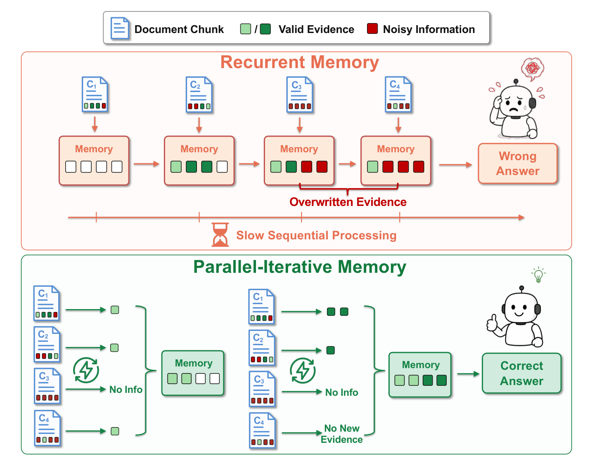
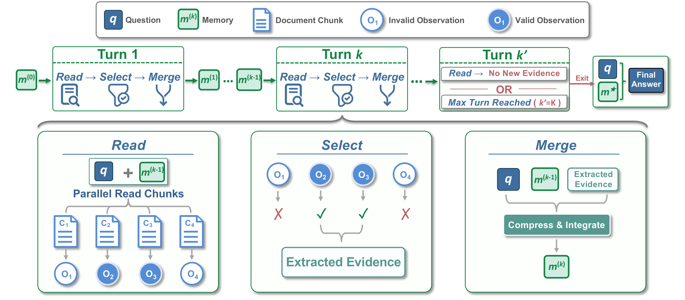
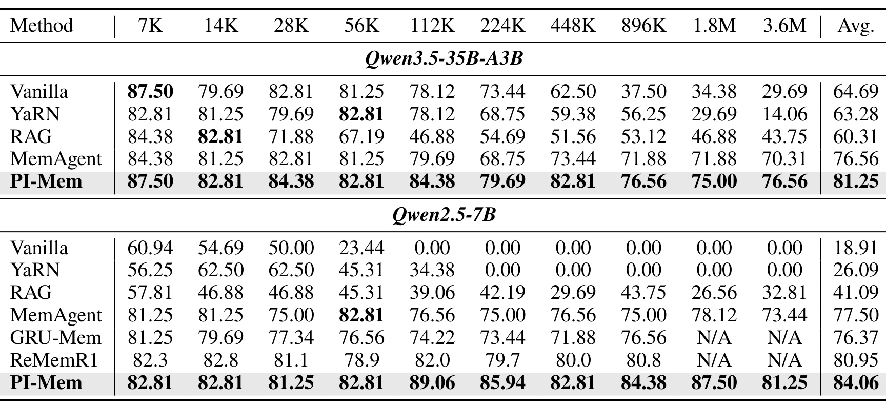
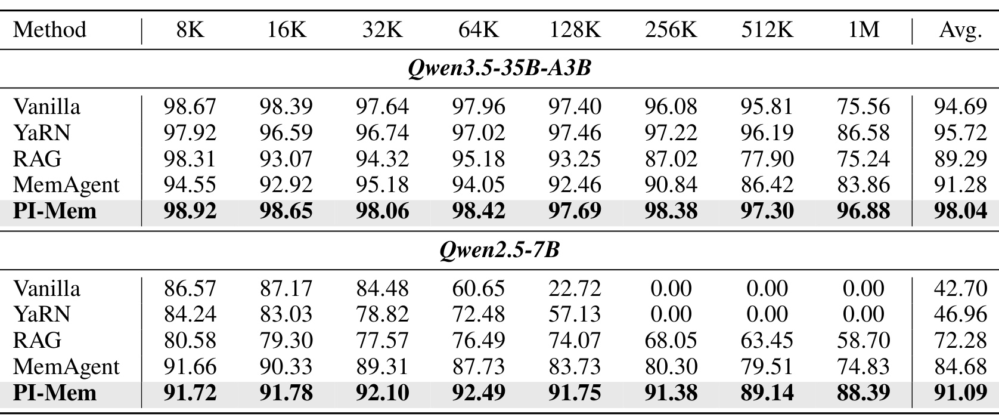
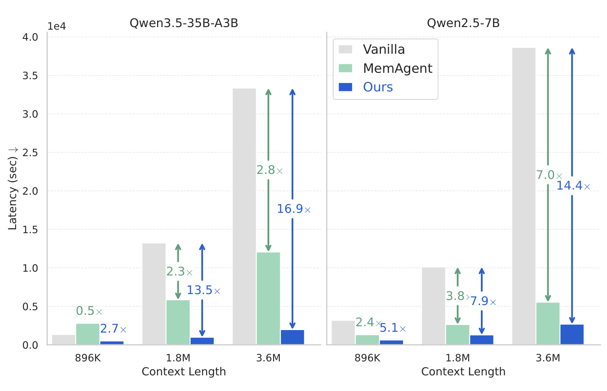
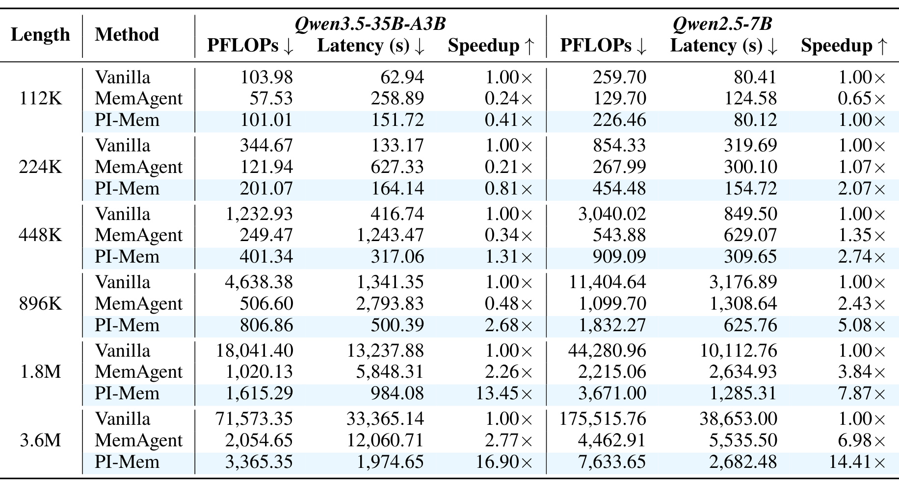
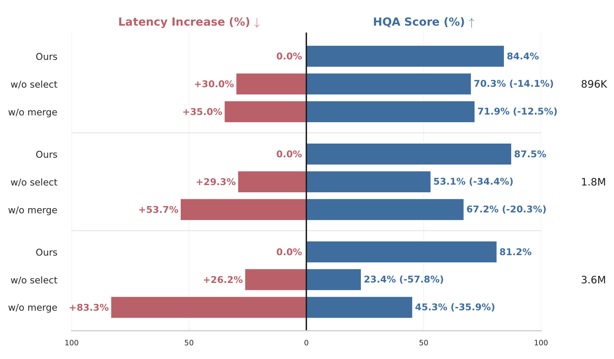
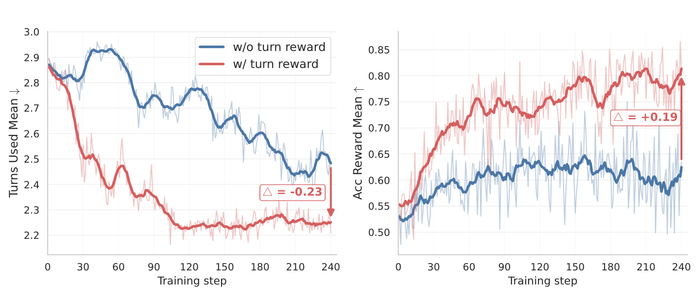

PI-Mem：用并行迭代记忆把长上下文推理扩展到 360 万 token
PI-Mem 的完整标题是 PI-Mem: Pushing Long-Context Reasoning to 3.6M Tokens with Parallel-Iterative Memory。论文由 Dawei Liu、Haixu Song、Shuang Cheng、Shijie Wang、Haozheng Hou、Kaifeng Liu、Ermo Hua、Zhonghang Yuan、Zhijie Zhong、Yuchen Fan、Biqing Qi 与 Bowen Zhou 合作完成；第一作者主机构为上海交通大学，合作机构包括上海人工智能实验室、清华大学、浙江大学、哈尔滨工业大学与中国科学技术大学。论文于 2026 年 8 月 4 日公开，原文入口为 arXiv:2608.03048。论文首页给出的 PI-Mem 官方代码仓库 已核验可访问。
这篇工作研究的不是怎样继续增大 Transformer 的原生窗口，而是怎样把一个远超模型窗口的文档集合组织成可并行执行、可迭代补证据、又能在证据足够时停止的工作流。其核心对象是一段固定长度的文本记忆；不同之处在于，PI-Mem 不再按文档顺序反复覆盖这段记忆，而是让所有分块在同一轮共享同一个记忆状态，分别读、分别判断，再统一合并。
现有循环记忆有两个内生问题：逐块顺序更新会让后到的无关信息覆盖先前关键证据；严格的块间串行依赖又限制并行处理，使推理延迟随上下文长度增长。长上下文任务因此同时遭遇“证据保不住”和“时间降不下来”的矛盾。
1. 背景和问题
1.1 超长上下文不等于把窗口继续拉长
长文档问答、多轮对话、代码库理解与需要浏览大量外部材料的 Agent，都要求模型在相隔很远的位置发现并组合证据。原生窗口扩展和位置编码外推可以让模型一次看到更多 token，但在百万级输入上，稠密注意力的计算量与 KV cache 仍很重，而且外推距离超出训练范围后，模型是否真正利用了远端内容并无保证。稀疏注意力试图只计算部分 token 或块，代价是要额外学习或规定稀疏模式；RAG 先检索再推理，效率高，却可能在第一跳检索时漏掉只有在别的事实出现后才显得相关的证据。
循环文本记忆提供了另一条路线：把长输入切成模型能处理的块，用固定长度记忆概括已经读过的内容；下一块与上一状态一起输入模型，生成新的记忆，最后只基于最终记忆回答。它把单次激活上下文限制在“一个块加一份记忆”，计算量不再直接按整个上下文做平方增长，理论上也能处理任意数量的块。问题在于，这种路线把“压缩”与“顺序状态转移”绑定在一起。每次更新都必须在有限预算内重新表达旧状态与新块；即使早期证据仍以注释形式存在，它在记忆中的地位也可能被最后出现的信息改变，最终回答往往偏向最新、最显眼但并不完整的候选。
1.2 顺序循环记忆为什么会失真且变慢
论文把失真拆成两个具体机制。第一是覆盖：当前块和固定长度旧记忆要共同压进一份新状态，后来的噪声可以挤走早期关键事实；更隐蔽的情况是事实仍在文字中，却被降级成“旧值”“待确认”或背景注释，最终答案生成没有把它当成并列有效证据。第二是串行依赖：第 (i) 个块必须等第 (i-1) 个块更新记忆后才能开始，哪怕有很多 GPU，单个样本仍存在与块数 (N) 同阶的关键路径。上下文越长，块越多，这条路径越难靠批处理消除。

主文 Figure 1 把两个问题画在同一个因果链上。上半部分中，四个块顺序改写 Memory；绿色有效证据先进入状态，随后被红色噪声占据，最终给出错误答案。横向箭头还意味着每个块必须等待前一状态完成。下半部分把顺序轴换成轮次轴：同一轮的 (C_1) 到 (C_4) 同时读取，缺乏信息的块可以明确返回 No Info，有效结果先并列保留再合并；下一轮仍是并行读，但条件已经包含上一轮汇总的证据。这里的“并行”不是简单把循环记忆的调用同时发出，因为各调用不再依赖不同的前驱状态；它们共享同一个轮初记忆，才真正消除了轮内串行链。
这张图也提示了 PI-Mem 的代价：一个块可能被重复读取多轮，工作量未必比循环记忆少。论文的主张更准确地说，是把难以并行的 (O(N)) 串行路径改造成至多 (K) 轮的并行工作，同时用选择和合并控制中间上下文。它优化的是墙钟延迟与证据保留的组合，而不是保证每个长度下 FLOPs 都最小。
1.3 论文要验证的三个问题
PI-Mem 因而需要同时回答三件事。其一，同轮并行读取能否在百万 token 上保住分散的多跳证据，并超过 MemAgent、GRU-Mem、ReMemR1 等循环方案。其二，多轮重复读会增加总调用量，实际系统能否通过并行批处理把它换成更低端到端延迟，而不是只报告理论串行深度。其三，模型要学会输出有效的 <check> 信号、压缩互补证据并及时退出；仅靠提示模板是否足够，还是必须对整条多调用轨迹做强化学习。
作者用 HotpotQA 合成超长训练数据，用 RULER 的 HQA、其余十一个分布外任务、LongBench v2、MV-NIAH 证据覆盖率以及 896K 到 3.6M 的墙钟延迟分别检验这些问题。这个证据链比只报一张准确率表更完整，但它也把结论边界锁定得很清楚：训练和最强 headline 仍集中在合成文档混合下的问答任务，离真实持续更新的企业知识库、代码库或个性化记忆还有距离。
还要区分 PI-Mem 与普通“并行 map-reduce 摘要”。后者通常让各块只读一次，再把独立摘要汇总；它能并行，却无法在发现桥接实体之后返回原块补取关系。PI-Mem 的共享记忆在轮次之间广播，使第二轮读取成为带新条件的证据搜索。与此同时，它也不同于每轮重新做向量检索：所有原始块仍在读取域内，相关性由模型相对当前记忆判断。作者因此必须证明三种能力同时成立——检查信号能过滤无增量块，合并调用能在固定预算里保留互补关系，退出规则能在证据充分后停止。如果只满足前两项而不会退出，延迟会被重复轮次吞掉；如果过度追求早停，多跳证据又会重新变成一次检索的漏召回问题。这也是论文把工作流强化学习、组件消融和轮次奖励放在同一实验链中的原因。
2. 方法
2.1 Read-Select-Merge Turn
给定问题 (q)、长上下文 (C) 和模型 (pi_\theta)，PI-Mem 先把 (C) 切成等长块 ({c_i}_{i=1}^{n})，并把初始全局记忆 (m^{(0)}) 设为空。第 (k) 轮不是一次模型调用，而是一套完整的 Read、Select、Merge 操作：
符号解释：(m^{(k)}) 是第 (k) 轮结束后的全局文本记忆，(m^{(k-1)}) 是该轮所有块共享的输入状态，(c_i) 是第 (i) 个文档块，(pi_\theta) 是执行三类调用的同一语言模型。关键约束是同一轮内各 ReadCall 都看见完全相同的 (m^{(k-1)})，而不是一个不断被前序块改写的状态。

主文 Figure 2 上半部分给出轮次级状态机：空记忆进入 Turn 1，经过若干轮后，只要某一轮没有新证据，或达到最大轮次 (K)，就退出并用问题与最终记忆 (m^\star) 生成答案。下半部分展开一轮内部。Read 把 (q)、同一份 (m^{(k-1)}) 与各自 (c_i) 放入模板，块调用并行产生观测 (o_i^{(k)})；Select 读取每个输出最前面的 <check>yes</check> 或 <check>no</check>；Merge 则把问题、旧记忆和所有通过筛选的观测压缩成 (m^{(k)})。真正改变依赖图的是“所有块共享轮初记忆”，真正限制记忆膨胀的是“先筛选、再统一压缩”。
符号解释：(o_i^{(k)}) 是第 (k) 轮第 (i) 个块的读取结果，(chi(cdot)) 解析 <check> 标签，(O^{(k)}) 是进入合并调用的观测集合。yes 的语义不是“这个块与问题大致相关”，而是“相对当前记忆，它提供回答问题所需的新证据或互补证据”。如果省略 Select，所有噪声与重复观测都会进入 Merge；如果省略 Merge 而直接串接通过筛选的观测，中间上下文会随正样本块数增长，碎片也没有被组织成可用于下一跳的关系。
MergeCall 的输入是 (q)、(m^{(k-1)}) 与 (O^{(k)})。它必须去重、保留答案所需细节、整合跨块关系，同时仍输出固定预算的文本记忆。训练时，Read、Merge 与 Final 都是同一条轨迹中的模型调用；推理时，没有额外的检索器或向量数据库参与决策，过滤和压缩均由语言模型根据模板完成。这让方法容易接到现有推理服务上，也意味着检查信号一旦校准不良，系统没有独立模块兜底。
2.2 Iterative Refinement and Exit Mechanism
只做一轮并行读仍不足以完成真正的多跳推理。第一轮从空记忆出发，某个块中的实体关系可能尚未显得有用；当别的块先提供桥接实体后，第二轮的所有 ReadCall 都能基于新记忆重新判断原块。PI-Mem 因而让 (m^{(k)}) 回流为下一轮条件，形成“发现证据—广播到全局记忆—用新条件重新读取”的跨块信息交换。它不同于把第一轮所有结果一次性拼给最终回答：每轮都可以重新访问原始块，补上只在新线索出现后才能识别的关系。
退出也复用了 <check> 信号。当 (O^{(k)}=\varnothing) 时，说明所有块都声称没有相对当前记忆的新证据，循环立即停止；否则继续到下一轮，直到上限 (K)。最终调用只接收 (q) 与 (m^\star)，不再携带完整原文，所以最终生成的上下文保持紧凑。论文默认 (K=3)，并在补充实验中验证 (K=1) 会一致损害 HQA，而 (K=5) 没有稳定额外收益：多数样本提前收敛。这里的风险是所有块共同漏判时会过早退出；反过来，只要有块反复误报“新证据”，就会浪费整轮并行读取。
从计算图看，若块数为 (N)、块长为 (C)、固定记忆长为 (M)、最多迭代 (K) 轮，PI-Mem 在标准平方注意力下的主要块读取代价和串行深度分别如下。这个表达式专门分开“总工作量”与“必须顺序等待的深度”，避免把并发吞吐误当作计算量减少：
符号解释：(N(C+M)^2) 表示一轮中所有块连同固定记忆的总注意力工作量，(K) 是有界轮数。MemAgent 的主要代价是 (O(N(C+M)^2))，但串行深度为 (O(N))；PI-Mem 最多多做 (K) 倍块读取，却把关键路径从块数改成轮数。只有当 (K\ll N)、有足够并行资源、调度与显存压力可控时，这个交换才会转化为低墙钟延迟。
2.3 Trajectory-Level Reinforcement Learning
PI-Mem 用 GRPO 风格的强化学习端到端训练整个多调用工作流。一条 rollout 不是单个回答，而是包含该问题的全部 Read、Merge 与 Final 调用。这样才能把某次局部读取是否有用，放回它最终是否促成正确答案、是否造成冗余轮次的完整链路中判断：
符号解释：(tau_i) 是第 (i) 条完整轨迹，(S_i) 是轨迹内调用次数，(x_{i,s}) 是由当前工作流状态构造的阶段提示，(y_{i,s}) 是模型输出。轨迹级建模很重要，因为某个 Read 输出本身没有最终正确/错误标签；它是否有价值要看后续合并和最终答案。
符号解释：(k_i) 是轨迹实际使用的轮数，(K) 是上限，(r_{\mathrm{acc}}(a_i)) 是最终答案可验证奖励，(lambda_{\mathrm{turn}}) 控制效率奖励权重。越早退出，第一项越大；但如果过早退出导致答案错，准确奖励会下降。论文消融使用 (lambda_{\mathrm{turn}}=0.2)，目标不是无条件压轮数，而是在已收集足够证据后减少冗余迭代。
符号解释：(A_i) 是轨迹 (i) 相对同组平均奖励的优势，(R_j) 是第 (j) 条完整轨迹奖励。这个 (A_i) 被广播给轨迹中的每个调用和每个生成 token，使一次成功的跨块证据链能够共同强化产生它的读取、合并与最终回答行为。
符号解释：(ell_{i,s,t}) 是轨迹 (i)、调用 (s)、token (t) 的代理项，(varepsilon) 是裁剪宽度，(rho) 是当前策略相对旧策略的概率比。裁剪避免一次更新因少数高优势轨迹偏离旧策略过远。概率比定义为：
符号解释：分子是当前策略生成该 token 的条件概率，分母是 rollout 使用的旧策略概率，(y_{i,s,<t}) 是同次调用已有前缀。最后用 DAPO 风格按组内全部生成 token 聚合，并加入参考策略 KL 约束：
符号解释：(Z=\sum_i\sum_s|y_{i,s}|) 是组内总生成 token 数，(beta) 是 KL 系数，(pi_{\mathrm{ref}}) 是参考策略。按 token 聚合避免长轨迹或长调用只因长度而被不恰当地放大；KL 则限制工作流训练破坏基础语言能力。部署阶段不再计算这些奖励，模型只按已经学到的模板与退出策略运行。
3. 实验结果
3.1 训练、评测与对照组
作者在两种规模差异很大的骨干上评测。Qwen3.5-35B-A3B 是混合专家模型，训练样本由 1000 篇文档构成，约 140K token，chunk 为 15K，所有生成阶段最多 4096 token；Qwen2.5-7B-Instruct 使用 MemAgent 发布数据，每个样本 200 篇文档、约 28K token，chunk 为 5K、最大输出 1024。两者都把 HotpotQA 金标准段落嵌入同数据集干扰文档，默认最大轮数 (K=3)。Qwen3.5 使用 32 张 H200 训练 75 小时、8 条 GRPO 轨迹一组、80 个 rollout step；Qwen2.5 使用 16 张 H200 训练 96 小时、16 条轨迹一组、240 step。论文称每个模型只训练一次，没有报告多随机种子方差。
评测在 8 张 H200、tensor parallel 2 下进行，温度 0.7、top-p 0.95；RULER 每个任务、每个长度 64 个样本。基线包括直接推理 Vanilla、位置外推 YaRN、每样本建立 BM25 并取 top-6 chunk 的 RAG，以及 MemAgent、GRU-Mem、ReMemR1 等循环记忆方法。RULER 的 HQA 与训练构造同源，被视为分布内；其余十一项任务视为 OOD。LongBench v2 有 503 个现实多选题。单答案任务用归一化 Sub-EM，多答案任务按目标值在预测中出现的比例计分。这个设置兼顾了长度、任务外推和真实任务，但 64 样本端点的统计波动与单次评测仍要留意。
3.2 HQA、RULER OOD 与 LongBench v2

主文 Table 1 显示，Qwen3.5 上 PI-Mem 的 HQA 平均分为 81.25，MemAgent 为 76.56；在 3.6M token 处分别为 76.56 与 70.31，绝对提升 6.25。更能说明长度鲁棒性的是 Vanilla 和 YaRN 在 3.6M 只剩 29.69 与 14.06，而 PI-Mem 从 7K 的 87.50 到 3.6M 仍保留大部分能力。Qwen2.5 上，PI-Mem 平均 84.06，MemAgent 77.50；3.6M 分别为 81.25 与 73.44，提升 7.81。Vanilla 在 112K 之后为 0，说明 7B 模型原生直接推理在此设置中已经越过可用边界。值得注意的是，ReMemR1 的八个已报告长度平均为 80.95，但没有 1.8M 和 3.6M 数据，因此不能把 84.06 与它做完整十长度的严格等口径比较。

主文 Table 2 检验模型是否只是记住 HQA 工作流。Qwen3.5 的 PI-Mem 在十一项 OOD 任务平均 98.04，MemAgent 为 91.28；到 1M 时仍为 96.88，而 MemAgent 降到 83.86。Qwen2.5 的相应平均分是 91.09 对 84.68，1M 端点为 88.39 对 74.83。这里 PI-Mem 在短长度上的优势不大，收益主要体现在长度增长后没有明显崩塌。补充表还表明，没有 RL 的并行工作流在 Qwen2.5 OOD 平均仅 77.37，低于 RL 后的 91.09，说明“结构可并行”本身不等于模型会正确执行选择、合并与停止。
LongBench v2 的结论更温和。Qwen3.5 上 PI-Mem 总分 54.1，高于 MemAgent 52.3、Vanilla 50.7；Easy 子集达到 66.1，Long 子集达到 63.9。但 Hard 子集为 46.6，略低于 MemAgent 的 47.6；Short 为 53.3，也低于 Vanilla 的 56.1。作者没有报告 Qwen2.5 的 LongBench v2 方法比较，因为所有方法接近四选一随机水平。因而论文可以支持“长任务分组和总体分数改善”，不能据此说所有难度、所有长度均占优。
3.3 证据保留与案例诊断
在 RULER MV-NIAH 中，问题要求从长上下文找出同一个 key 对应的四个独立值。最终记忆覆盖率直接检查答案生成前，真实值是否仍留在状态里。Qwen3.5 的 PI-Mem 在 256K、512K、1M 都是 100%，MemAgent 分别是 70.3%、74.2%、58.6%；Qwen2.5 的 PI-Mem 为 98.8%、100%、100%，MemAgent 为 73.8%、75.8%、74.6%。这组证据比最终 EM 更贴近论文提出的覆盖机制：即使答案模块不变，并行读取和同轮合并确实让更多目标值存活到最后。
Technical Supplement 还给出两组成对轨迹。MV-NIAH 样本有 130,778 token，四个 magic number 分布在不同块。MemAgent 每次遇到新值都把它提升为主要条目，把旧值降到“previous/correction”，最终只回答最后一个，Sub-EM 为 0.25；PI-Mem 第一轮并行保留四个正读取并合并，第二轮没有新证据便退出，完整返回四个值。HQA 样本有 1600 篇文档、226,114 token，需要先确定专辑第三支单曲是 “Chattahoochee”，再把它与另一个块中的 “We’ll Burn That Bridge peaked at #2 for two weeks behind Chattahoochee” 相连。MemAgent 曾保留后一个关系，却在后续围绕曲目顺序重写状态时删掉它，最后错误回答桥接实体 Chattahoochee；PI-Mem 在同一轮保留两个互补块，合并后闭合两跳链并答对。
案例说明 PI-Mem 的价值不是把所有原文永久塞进记忆，而是推迟互补证据之间的竞争：块级观测先并列存在，Merge 在看到一整轮正证据后再决定如何压缩。不过这些仍是作者挑选的解释性案例，不能替代大规模错误类型统计；Select 误报、Merge 压缩失真以及 Final 忽略记忆仍可能发生。
3.4 计算代价、串行深度与真实延迟

主文 Figure 3 的拐点很重要。Qwen3.5 在 896K、1.8M、3.6M 上，PI-Mem 相对 Vanilla 加速约 2.7、13.5、16.9 倍；Qwen2.5 对应约 5.1、7.9、14.4 倍。与 MemAgent 比，3.6M 时延迟从 12060.71 秒降到 1974.65 秒（约 6.1 倍）和从 5535.50 秒降到 2682.48 秒（约 2.1 倍）。这符合依赖图分析：MemAgent 每个块虽然短，却必须串行；PI-Mem 的块调用能在一轮内批量执行。两种骨干的柱高差异还说明收益受骨干结构和单次生成成本影响。图中不能读出“任何长度都更快”，因为短区间的并行调用和多轮成本可能超过一次直接推理；这一点需要结合下一张完整成本表判断。

Technical Supplement Table 7 把代价交代得更完整。以 Qwen3.5 为例，112K 时 Vanilla 只需 62.94 秒，PI-Mem 151.72 秒，速度仅为 Vanilla 的 0.41 倍；224K 仍只有 0.81 倍，到 448K 才达到 1.31 倍。与此同时，3.6M 时 PI-Mem 的估算计算量为 3365.35 PFLOPs，高于 MemAgent 的 2054.65 PFLOPs，却因并行路径更短而把延迟降到后者的约六分之一。Qwen2.5 也存在同一权衡：3.6M 时 PI-Mem 为 7633.65 PFLOPs、MemAgent 为 4462.91 PFLOPs，但延迟分别为 2682.48 与 5535.50 秒。PI-Mem 的效率收益依赖充足并行硬件和超长输入；在较短上下文或资源受限服务中，它可能既多算又更慢。
表中 Vanilla 的 PFLOPs 随总长度快速上升，3.6M 达到 71573.35（Qwen3.5）和 175515.76（Qwen2.5）；PI-Mem 把每次调用限制在 chunk 加 memory 后，总量近似随块数和轮数增长。作者对 64 个样本做端到端计时，包含读取、迭代、记忆更新和最终回答，因此比只测单层注意力更接近系统成本。但该结果使用 8 张 H200、TP=2，具体 batch 调度、并发队列和显存占用没有形成跨硬件曲线，不能直接外推到单卡或线上低并发环境。
3.5 组件、奖励与轮次消融

主文 Figure 5 同时测准确率和延迟。896K 时，完整 PI-Mem 得分 84.4；去 Select 降到 70.3 且延迟增加 30.0%，去 Merge 降到 71.9 且增加 35.0%。到 3.6M，去 Select 只剩 23.4、比完整配置低 57.8 个点；去 Merge 为 45.3、低 35.9 个点，延迟分别增加 26.2% 和 83.3%。这证明 Select 不只是节省 token，它防止无关观测污染合并；Merge 也不只是格式整理，它把碎片压成下一轮可复用的共享状态。长度越大，缺少任一模块时，噪声累积或记忆膨胀越严重。尤其是去 Merge 在 3.6M 上增加 83.3% 延迟，表明简单拼接正观测会迅速放大后续调用的上下文，不能把 Select 单独视为完整替代方案。

主文 Figure 6 比较 (lambda_{\mathrm{turn}}=0.2) 与不加轮次奖励。带奖励的模型在约 100 step 后把平均轮数稳定在约 2.2 左右，末端相对无奖励低 0.23；右图准确奖励反而高 0.19，而不是用更早停止换取明显错误。作者的解释是，未训练好的额外轮次会重复引入噪声或过度改写已经充分的记忆，因而“少一轮”有时同时改善准确率和成本。不过曲线仅来自 Qwen2.5 的一次训练过程，没有置信区间，奖励权重对不同任务的最优值仍未知。
补充的最大轮数消融进一步约束结论。(K=1) 在所有 HQA 长度上都比 (K=3) 差，证明第二轮确实承担“桥接证据出现后重读”的作用；从 (K=3) 提到 (K=5) 则没有一致提升。(K=5) 时 75.94% 样本两轮退出，只有 4.84% 使用四或五轮，说明实际计算通常低于最坏上限。chunk 从 5K 到 25K、memory 从 2K 到 8K 的 training-free Qwen3.5 消融没有呈现跨长度一致退化，但这不是“参数不敏感”的普遍证明：只测试 HQA、只改变一个参数，且训练后模型是否同样稳健尚未核验。
4. 总结
4.1 我的判断与迁移价值
PI-Mem 最有价值的贡献，是把长上下文记忆从“顺序摘要器”改写成“有界轮次的并行证据协调器”。Read 负责在原始块中保留局部细节，Select 让块明确声明相对当前记忆的增量，Merge 把同轮互补证据一起压缩，下一轮再把汇总结果广播回全部块。这样既避免每个块立即覆盖全局状态，也允许后发现的桥接事实改变对早先块的读取。RL 则把答案正确、工作流协同与退出成本放进同一轨迹奖励，补上提示模板无法稳定校准的部分。
对推荐系统而言，这种结构可以启发长期用户记忆或跨会话画像：把历史按时间段、场景或行为类型分块，同轮并行抽取相对当前兴趣状态的新证据，再合并为有预算的用户记忆；第二轮可在发现“用户正在筹备旅行”等桥接意图后，重读早先看似无关的酒店、交通、户外行为。它不应直接替代在线召回和排序，因为多轮大模型读取成本很高，更适合作为离线画像更新、复杂解释、研究助手或高价值长会话的慢路径。对 RAG 和 Agent，它提示检索不一定只能做一次：第一次并行读得到桥接实体，第二次在同一原始材料上做条件化证据抽取，可能比无限增大 top-k 更干净。
工程上应把 PI-Mem 视作延迟—算力交换，而不是免费扩窗。只有文档足够长、块数远大于实际轮数、硬件能有效批处理并行 ReadCall 时，(O(K)) 串行深度优势才显著。若输入只有几十万 token、并发资源有限，Table 7 已显示它可能慢于 Vanilla。上线评估应同时记录最终正确率、证据覆盖、平均/尾部轮数、正观测比例、Merge 输出长度、峰值显存、总生成 token 与 P95 墙钟延迟。
4.2 局限、风险与后续跟进
局限至少有五项。第一，训练数据来自 HotpotQA 金段落加同数据集干扰文档，最亮眼的 3.6M 结果也是 HQA；真实文档的冗余、冲突、时效性和恶意内容更复杂。第二，RULER 每个长度只有 64 个样本，模型单次训练、样本单次评测，没有随机种子方差，若干百分点差异的稳定性仍需复验。第三，并行降低墙钟延迟却提高块读取总工作量和峰值聚合压力，结果高度依赖 8 张 H200 的批处理条件。第四，固定长度 Merge 仍是有损压缩；PI-Mem 缓解顺序覆盖，不等于消除合并阶段的遗漏或幻觉。第五，退出完全依赖模型生成的 <check>，误报会浪费整轮，漏报会提前终止；论文没有给出 check 校准曲线、召回率或任务外阈值分析。
后续值得做四组验证。其一，在真实代码库、多版本规范、企业知识库和长会话上构造带证据位置标注的测试，区分读取漏检、选择漏检、合并丢失与最终回答错误。其二，在单卡、较少 GPU、不同 batch 与并发限制下复测 Table 7，找出从“多算且更慢”转为“多算但更快”的长度拐点。其三，比较固定三轮、学习式退出、基于不确定性的退出和按块异步停止，观察平均轮数下降是否牺牲困难样本。其四，把 Merge 从自由文本压缩改为可追踪的证据槽位或带来源 ID 的结构化记忆，检查能否在保持并行性的同时提高可审计性，并减少恶意块通过合并阶段污染全局状态。
总体而言，论文提供了准确率、证据覆盖、消融与端到端延迟相互支撑的证据，说明并行迭代记忆在极长问答中有现实潜力；但它更像一种面向高并行硬件的工作流设计，而不是对原生长窗口、RAG 或顺序记忆的普遍替代。复现时最该盯住的不是“360 万 token”这个数字本身，而是证据在各阶段是否被保留、实际轮数是否收敛，以及计算量增加能否在目标硬件上真正换来延迟下降。